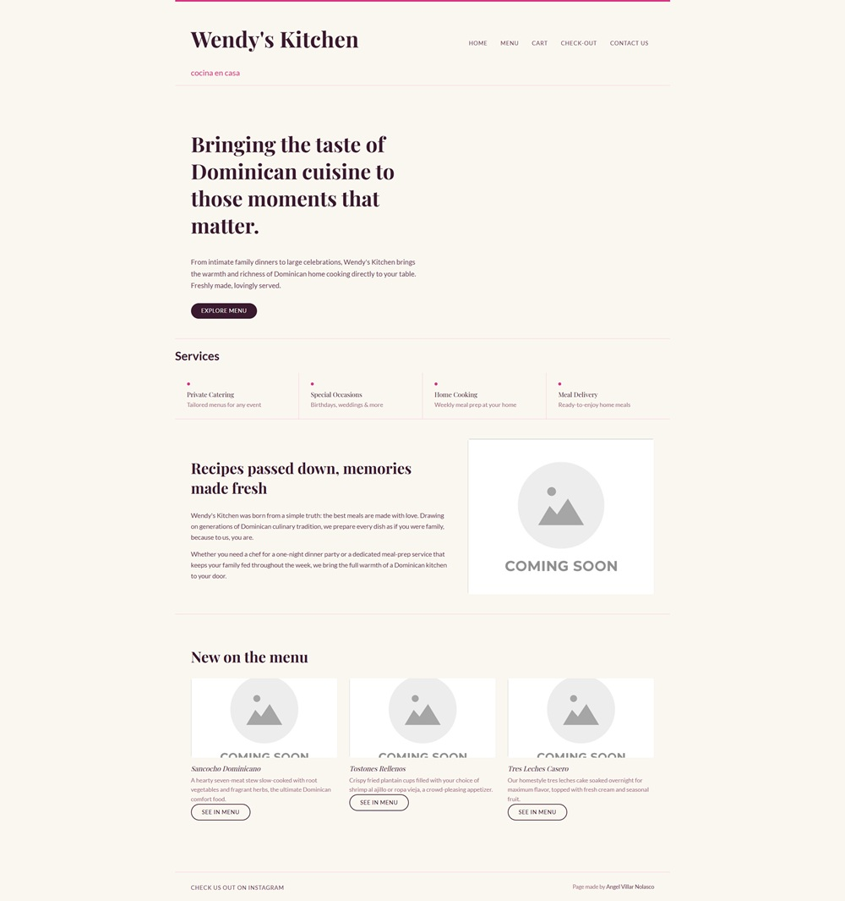

Peer Review 1
Reviewing: Villar Nolasco, Angel A.
Date: 21 April 2026

- Submission: It leads directly to the page being reviewed and opens to the Angel Villar Nolasco's client project, Wendy's Kitchen.
- File and Folder Names: There do not appear to be any spaces in the file or folder names. However, one image filename,
placeholderImage.jpg, includes an uppercase letter. - Design A: The page uses a warm light background with dark serif text that creates strong contrast and makes the content easy to read. Headings are bold and noticeable, while the body is sized well for readability. The contrast between the text and background appears clear throughout the page.
- Design B: The styling remains consistent across the site with matching font, colors, and spacing. This gives the page a clean and professional appearance while helping each section feel connected.
- Design CRAP: The site uses the CRAP principles well. Contrast is clear with dark text on a light background. Repetition is shown through consistent fonts, colors, and button styles. Alignment keeps the layout neat and organized. Proximity groups related content together, making each section easy to follow.
- Page structure: Has a header, a main, a footer, and a navigation menu between the header and main.
- Header: Contains the brand name in an h1. Wendy's Kitchen is only shown at the top of the website, in large display font, and it isn't repeated anywhere else.
- Main: Starts with the name of the page as an h2 and does not include the name of the site/brand.
- Tagline: The page includes a visible brand tagline, "cocina en casa," near the top of the page.
- Footer: Has a WCAG, HTML, CSS, JS, and image validation button/link to check for errors. There is one JavaScript error that needs to be addressed.
- Additional feedback: The call-to-action button, "Explore Menu," is a strong interactive feature that encourages user engagement. One major improvement would be replacing the placeholder images with real food photography or branding images to make this site feel more complete.
- Overall: This is a strong client project with professional branding, clean organization, and a realistic business feel. It already looks polished, and a few final visual improvements would make it even stronger.